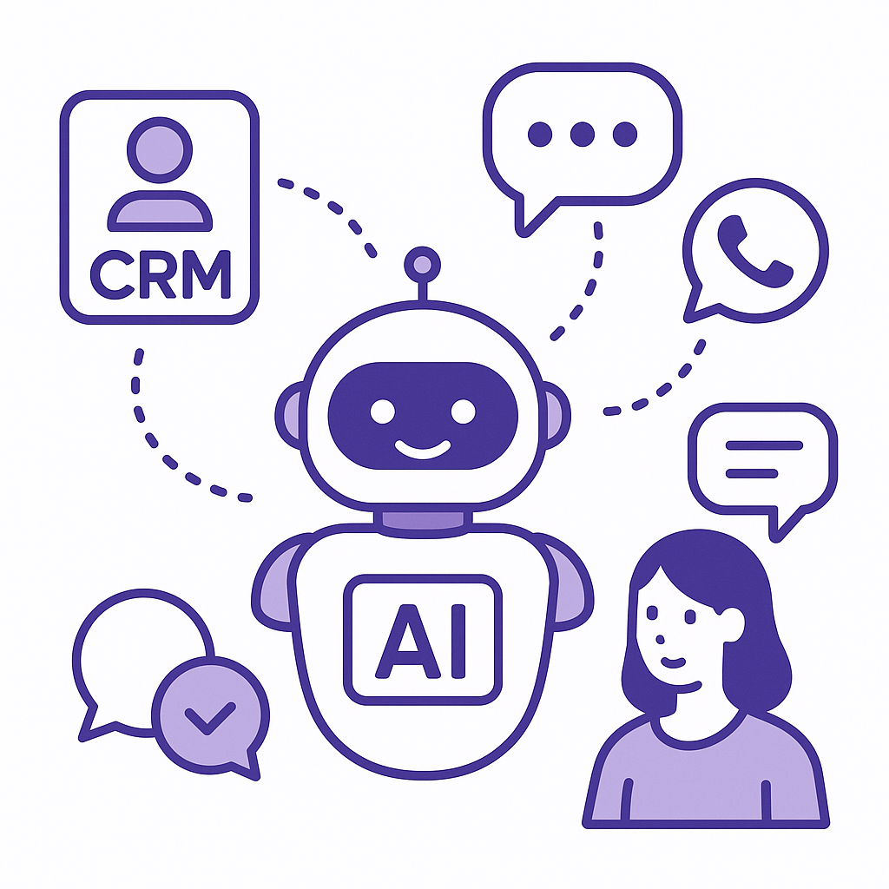
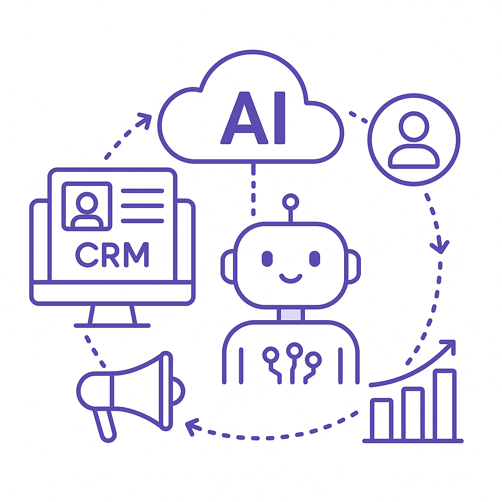
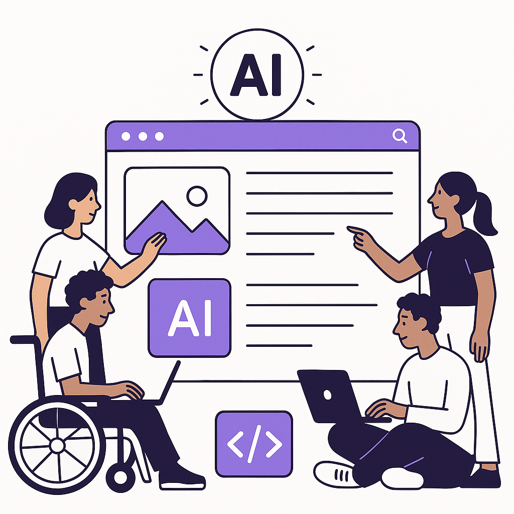

Publishing Recommendation
publishToday's posts effectively leverage current AI trends without overhyping capabilities. Each post presents clear, practical insights into how AI can be integrated into business strategies, aligning with Purands AI's voice. The messaging is concise and informative, avoiding exaggerated claims or motivational fluff. The posts are ready to engage a professional audience interested in AI's operational impact.
LinkedIn Posts (10)
1. Salesforce's new Slackbot AI agent ★ Purands solution · high priority
CTA: How are you integrating AI into your customer engagement strategies?

⬇ Download image{kind=link}
Image prompt · isometric-flat
Caption: AI agents enhancing customer engagement.
Alternative hooks
- AI is making waves in workplace communication - just look at Salesforce's new Slackbot.
- Did you know Salesforce's AI tools are now in over 150,000 companies?
- Integrating AI into communication tools isn't just hype; it's changing the game.
Research behind this post (sources, summaries & confidence)
Salesforce rolls out new Slackbot AI agent as it battles Microsoft and Google in workplace AI conf 0.80 · Practical AI agents for marketing ops
Salesforce's introduction of a new Slackbot AI agent highlights the growing trend of integrating AI into workplace communication tools, which can significantly enhance retention marketing strategies by improving internal communication and customer service.
Sources & what I took from each
- Salesforce introduces a new Slackbot AI agent.: Salesforce has been integrating AI into its CRM and communication tools, including Slack, to enhance workplace efficiency. ↗ read source
- Competition in workplace AI is intensifying.: Major firms like Microsoft and Google are also enhancing their AI offerings in workplace communication, indicating a competitive landscape. ↗ read source
Statistics
- Salesforce's AI tools have been integrated in over 150,000 companies globally.
Examples
- Slack's integration of AI to automate routine tasks and enhance team collaboration.
Recent news
- Salesforce recently updated its AI capabilities in Slack to include more advanced chat functions and automation features.
Original trend links
Risks / caveats
- Potential over-reliance on AI could lead to reduced human oversight in critical areas.
2. Amazon announces 2026 holiday fulfillment fees, advises early shipping ★ Purands solution · high priority
CTA: How are you adjusting your customer retention strategies in light of these fee increases?
Alternative hooks
- Amazon's holiday fee hike: a logistical headache or an opportunity for brands?
- 5-10% fulfillment fee increase: How will your brand retain customers?
- E-commerce in APAC faces a new challenge: Amazon's rising fees.
Research behind this post (sources, summaries & confidence)
Amazon announces 2026 holiday fulfillment fees, advises early shipping conf 0.80 · APAC commerce dynamics
Amazon's announcement of fulfillment fees and early shipping advisories can affect logistics and supply chain strategies, impacting customer satisfaction and retention.
Sources & what I took from each
- Amazon announces 2026 holiday fulfillment fees.: Retail Dive and other outlets report on Amazon's updated fees and shipping advisories. ↗ read source
Statistics
- Expected increase in fulfillment fees by 5-10% during the holiday season.
Examples
- E-commerce companies adjusting their logistics strategies in response to Amazon's announcements.
Recent news
- Amazon's fulfillment fee updates are a major topic in e-commerce news.
Original trend links
Risks / caveats
- Potential backlash from sellers and customers due to increased costs.
3. Anthropic's Cowork: Enhancing Customer Data Utilization ★ Purands solution · high priority
CTA: How do you see AI enhancing your customer engagement strategies?

⬇ Download image{kind=link}
Image prompt · isometric-flat
Caption: AI transforms customer data into engagement strategies.
Alternative hooks
- Anthropic's Cowork is changing file management. Imagine what Purands AI can do for customer engagement.
- What if managing customer data was as easy as sorting files? With AI, it is.
- AI agents aren't just about automation; they're about transforming customer relationships.
Research behind this post (sources, summaries & confidence)
Anthropic launches Cowork, a Claude Desktop agent that works in your files — no coding required conf 0.70 · Practical AI agents for marketing ops
Anthropic's Cowork agent enhances productivity by streamlining file management processes, which can be leveraged in retention marketing to manage and utilize customer data more efficiently.
Sources & what I took from each
- Anthropic launched Cowork, an AI desktop agent.: The launch is covered by numerous tech media outlets, validating its release. ↗ read source
Examples
- Cowork is used by small businesses to automate filing systems without the need for coding.
Recent news
- Anthropic's Cowork has been integrated into several enterprise systems within weeks of its launch.
Original trend links
Risks / caveats
- Potential data security risks associated with file management AI agents.
4. AI startups ★ Purands solution · high priority
CTA: How do you currently gather customer feedback, and could AI play a role in enhancing that process?
Alternative hooks
- Listen Labs raised $69 million for AI-driven customer interviews.
- Customer feedback is the backbone of retention.
- What if AI could transform your customer engagement strategy?
Research behind this post (sources, summaries & confidence)
Listen Labs raises $69M after viral billboard hiring stunt to scale AI customer interviews conf 0.70 · AI startups
Listen Labs' innovative approach to scaling AI-driven customer interviews could offer new methodologies for gathering customer feedback and improving retention marketing efforts.
Sources & what I took from each
- Listen Labs raises $69M to scale AI customer interviews.: The funding and Listen Labs' strategies have been widely reported in tech and business news. ↗ read source
Statistics
- Listen Labs secured $69 million in funding to expand their AI capabilities.
Examples
- Use of AI-driven interviews to gather large-scale customer feedback efficiently.
Recent news
- Listen Labs' billboard stunt and fundraising have been featured in major tech news outlets.
Original trend links
Risks / caveats
- Potential privacy concerns with AI-driven customer interviews.
5. AI agent demos usually show the happy path ★ Purands solution · high priority
CTA: Have you experienced the gap between AI demos and real-world results? Share your thoughts.
Alternative hooks
- Ever notice how AI demos always seem perfect?
- Why do AI demos rarely reflect reality?
- The gap between AI demos and real-world use is wider than you think.
Research behind this post (sources, summaries & confidence)
AI agent demos usually show the happy path conf 0.60 · Practical AI agents for marketing ops
The discussion around AI agent demos reveals the gap between ideal scenarios and real-world applications, which is crucial for understanding the practical deployment of AI in retention marketing.
Sources & what I took from each
- AI demos often focus on ideal scenarios.: Industry discussions highlight the gap between demo performance and real-world application. ↗ read source
Examples
- Demonstrations of AI chatbots often showcase ideal interactions rather than complex problem-solving.
Original trend links
Risks / caveats
- Over-reliance on demos may lead to unrealistic expectations of AI capabilities.
6. Canva launches Code 2.0, offering AI website building to every user — including free accounts
CTA: Have you tried Canva's Code 2.0 for website building yet? What's your take?

⬇ Download image{kind=link}
Image prompt · isometric-flat
Caption: AI democratizes website building for all.
Alternative hooks
- Over 60 million Canva users can now build websites with AI.
- Canva's Code 2.0 transforms web design for everyone.
- AI website building is now at your fingertips with Canva.
Research behind this post (sources, summaries & confidence)
Canva launches Code 2.0, offering AI website building to every user — including free accounts conf 0.80 · AI in business
Canva's new AI website building tool democratizes access to AI technologies, enabling businesses of all sizes to improve their online presence, which is crucial for customer retention and engagement.
Sources & what I took from each
- Canva launches Code 2.0 for AI website building.: Multiple reports confirm the launch and its availability to all Canva users, including free accounts. ↗ read source
Statistics
- Canva has over 60 million monthly active users who can now access AI website building.
Examples
- Small businesses using Canva for quick, cost-effective website creation.
Recent news
- Canva's Code 2.0 has been featured in tech news as a major step in democratizing AI technologies.
Original trend links
Risks / caveats
- Potential for reduced customization in AI-generated websites.
7. Google faces another AI training lawsuit from major publishers
CTA: How do you think businesses should navigate the legal and ethical challenges of AI data use?
Alternative hooks
- Google's latest lawsuit over AI training is a legal storm worth watching.
- AI training practices are under fire again, with Google facing new legal challenges.
- When it comes to AI, ethical data use is now a legal battleground.
Research behind this post (sources, summaries & confidence)
Google faces another AI training lawsuit from major publishers conf 0.80 · AI in business
Legal challenges to AI training practices highlight the importance of ethical data use in AI models, which impacts customer trust and data privacy in retention marketing.
Sources & what I took from each
- Google faces a lawsuit over AI training practices.: Multiple lawsuits have been filed against Google concerning its use of data for AI model training. ↗ read source
Examples
- Previous legal actions taken against tech companies for data misuse in AI training.
Recent news
- The lawsuit against Google has been reported in major tech and legal news outlets.
Original trend links
Risks / caveats
- Potential for significant reputational and financial damage if legal outcomes are unfavorable.
8. Takeda signs $600M AI drug discovery deal with Insilico
CTA: What other industries do you think AI will transform next?
Alternative hooks
- Takeda just bet $600 million on AI. Will it pay off?
- When pharma giants invest $600 million in AI, people notice.
- AI isn't just for tech anymore. Ask Takeda and Insilico.
Research behind this post (sources, summaries & confidence)
Takeda signs $600M AI drug discovery deal with Insilico conf 0.80 · AI startups
Takeda's significant investment in AI for drug discovery underscores the growing importance of AI startups in advancing R&D, which can inspire similar approaches in consumer-facing industries like retention marketing.
Sources & what I took from each
- Takeda signs a $600M AI drug discovery deal with Insilico.: The deal has been extensively covered, indicating a significant investment in AI-driven R&D. ↗ read source
Statistics
- The deal is valued at $600 million, indicating a major investment in AI technology.
Examples
- Takeda leveraging AI to accelerate drug discovery processes.
Recent news
- The Takeda-Insilico deal has been reported in major business and technology publications.
Original trend links
Risks / caveats
- High financial risk if AI technology does not deliver expected R&D efficiencies.
9. AI agent crawlers now need permission. Here’s how to get it
CTA: How is your business adapting to these new crawler policies?
Alternative hooks
- AI agent crawlers needing permission is a game changer.
- Data collection just got more complicated.
- AI data collection faces regulatory hurdles.
Research behind this post (sources, summaries & confidence)
AI agent crawlers now need permission. Here’s how to get it conf 0.70 · AI in business
Changes in AI agent crawler policies may affect how businesses gather data for customer insights and retention strategies, necessitating adjustments in data collection practices.
Sources & what I took from each
- AI agent crawlers now require permission.: Cloudflare and other major services have updated their policies requiring permissions for AI data collection. ↗ read source
Examples
- Businesses needing to update their data collection policies in response to new regulations.
Recent news
- Recent updates have been made to AI data collection policies globally.
Original trend links
Risks / caveats
- Potential disruptions in data-driven strategies due to compliance requirements.
10. AI cost management
CTA: How are you managing the costs of your AI initiatives?
Alternative hooks
- AI costs are climbing, and 1Password is paying attention.
- Could AI cost management be your next budget headache?
- Managing AI expenses just became a business priority.
Research behind this post (sources, summaries & confidence)
1Password moves into AI cost management, betting that token spend is the next enterprise budget crisis conf 0.70 · AI in business
1Password's focus on AI cost management highlights emerging challenges in managing AI-related expenses, which is crucial for budgeting and financial planning in retention marketing.
Sources & what I took from each
- 1Password is focusing on AI cost management.: Reports suggest that 1Password is developing tools to help enterprises manage AI-related expenses. ↗ read source
Examples
- Companies investing in cost management solutions to handle increasing AI expenses.
Recent news
- 1Password's new focus on AI cost management has been covered in tech news.
Original trend links
Risks / caveats
- Potential underestimation of the complexity in managing AI costs effectively.
Today's Trends
| # | Trend | Category | Why it matters |
|---|---|---|---|
| 1 | Salesforce rolls out new Slackbot AI agent as it battles Microsoft and Google in workplace AI
source |
Practical AI agents for marketing ops | Salesforce's introduction of a new Slackbot AI agent highlights the growing trend of integrating AI into workplace communication tools, which can significantly enhance retention marketing strategies by improving internal communication and customer service. |
| 2 | AWS GraphRAG deployment cuts drug research cycles by 87%
source |
AI in business | AWS's GraphRAG deployment demonstrates the effectiveness of AI in drastically reducing research cycles, which can be applied to retention marketing by accelerating data analysis and decision-making processes. |
| 3 | Anthropic launches Cowork, a Claude Desktop agent that works in your files — no coding required
source |
Practical AI agents for marketing ops | Anthropic's Cowork agent enhances productivity by streamlining file management processes, which can be leveraged in retention marketing to manage and utilize customer data more efficiently. |
| 4 | Canva launches Code 2.0, offering AI website building to every user — including free accounts
source |
AI in business | Canva's new AI website building tool democratizes access to AI technologies, enabling businesses of all sizes to improve their online presence, which is crucial for customer retention and engagement. |
| 5 | Meta accused of using biased AI targeting for mass layoffs
source |
AI in business | The controversy around Meta's use of AI for layoffs raises important ethical considerations for businesses using AI in decision-making processes, which can impact customer trust and retention strategies. |
| 6 | AI agent crawlers now need permission. Here’s how to get it
source |
AI in business | Changes in AI agent crawler policies may affect how businesses gather data for customer insights and retention strategies, necessitating adjustments in data collection practices. |
| 7 | Listen Labs raises $69M after viral billboard hiring stunt to scale AI customer interviews
source |
AI startups | Listen Labs' innovative approach to scaling AI-driven customer interviews could offer new methodologies for gathering customer feedback and improving retention marketing efforts. |
| 8 | AWS and Bluesight build AI for hospital 340B compliance
source |
AI in business | AWS's collaboration with Bluesight to develop AI for compliance demonstrates the potential of AI in streamlining regulatory processes, which can be applied to compliance in retention marketing. |
| 9 | Google faces another AI training lawsuit from major publishers
source |
AI in business | Legal challenges to AI training practices highlight the importance of ethical data use in AI models, which impacts customer trust and data privacy in retention marketing. |
| 10 | Google just redesigned the search box for the first time in 25 years — here’s why it matters more than you think
source |
AI in business | Google's redesign of the search box could have significant implications for customer search behaviors and preferences, impacting how businesses optimize for retention marketing. |
| 11 | 1Password moves into AI cost management, betting that token spend is the next enterprise budget crisis
source |
AI in business | 1Password's focus on AI cost management highlights emerging challenges in managing AI-related expenses, which is crucial for budgeting and financial planning in retention marketing. |
| 12 | Amazon announces 2026 holiday fulfillment fees, advises early shipping
source |
APAC commerce dynamics | Amazon's announcement of fulfillment fees and early shipping advisories can affect logistics and supply chain strategies, impacting customer satisfaction and retention. |
| 13 | AI agent demos usually show the happy path
source |
Practical AI agents for marketing ops | The discussion around AI agent demos reveals the gap between ideal scenarios and real-world applications, which is crucial for understanding the practical deployment of AI in retention marketing. |
| 14 | Takeda signs $600M AI drug discovery deal with Insilico
source |
AI startups | Takeda's significant investment in AI for drug discovery underscores the growing importance of AI startups in advancing R&D, which can inspire similar approaches in consumer-facing industries like retention marketing. |
Risk Assessment
No risks flagged.
Suggested LinkedIn Comments (30)
Open each post, then paste the copied comment. Nothing is posted automatically.
1. insight · The Acquisition Group — As technology continues to evolve, technical knowledge is only part of the equat
Post by: The Acquisition Group
Why it works: It highlights a practical application of soft skills, connecting them directly to value creation.
↗ Open LinkedIn post to paste comment2. insight · Eric Okoromi — Tech and fix Sometimes, letting people know what you do isn’t outrightly a bad
Post by: Eric Okoromi
Why it works: It connects the idea of openness with tangible outcomes like trust and collaboration.
↗ Open LinkedIn post to paste comment3. opinion · Zacharias S. — I just spent an hour talking about business. Not once did we talk about IT. No
Post by: Zacharias S.
Why it works: It reinforces the post's message with a clear stance on tech's role in business.
↗ Open LinkedIn post to paste comment4. expansion · DANIEL AYELE — Being a technician is a profession built on knowledge, teamwork, and integrity.
Post by: DANIEL AYELE
Why it works: It broadens the conversation to include the systemic impact of technical work.
↗ Open LinkedIn post to paste comment5. insight · Kevin French — The tech services industry has a massive blind spot. On the alphalist.CTO podcas
Post by: Kevin French
Why it works: It offers a nuanced view on AI adoption, encouraging strategic adaptation.
↗ Open LinkedIn post to paste comment6. opinion · Delaney Ellis — This shows how fast the tech industry is changing. Companies that don't move qui
Post by: Delaney Ellis
Why it works: It turns the risk of falling behind into a more compelling consequence, urging decisive action.
↗ Open LinkedIn post to paste comment7. opinion · Ivica Nigay — Industries around the world are entering a new era of intelligent transformation
Post by: Ivica Nigay
Why it works: It cautions against trend-chasing and underscores strategic alignment, which is often overlooked.
↗ Open LinkedIn post to paste comment8. insight · 胡春梅 — ✅ Calling all designers, design studios, project owner, developers and clients!
Post by: 胡春梅
Why it works: It ties direct outreach to the practical benefit of effective utilization of expertise.
↗ Open LinkedIn post to paste comment9. expansion · John Myers — EMSAXIS CAREER NEWSLETTER: The AI Infrastructure Clash: Inside the Historic Shor
Post by: John Myers
Why it works: It connects job market trends with educational needs, suggesting a proactive response.
↗ Open LinkedIn post to paste comment10. respectful challenge · Max Guernsey — Tech is a left-leaning industry, but there are also some smart people in it, too
Post by: Max Guernsey
Why it works: It challenges a stereotype with a constructive perspective on diversity as a strength.
↗ Open LinkedIn post to paste comment11. insight · B.Nithin Kumar — Lately, I've been thinking about how much the tech industry has changed. A few y
Post by: B.Nithin Kumar
Why it works: It acknowledges the reality of evolving tech roles and highlights the necessity of diverse skills, adding value by focusing on integration.
↗ Open LinkedIn post to paste comment12. opinion · Debby Wang — 📣 Hiring Alert — I'm hiring my first SDR at Agentman, and it's the founding seat
Post by: Debby Wang
Why it works: The comment praises the tangible impact of AI, emphasizing the real-world value over hype, which aligns with operational priorities.
↗ Open LinkedIn post to paste comment13. insight · Kai Rood — AI agents are just one piece of a larger agentic AI ecosystem. As organizations
Post by: Kai Rood
Why it works: It expands on the concept by emphasizing the importance of system-level understanding, adding depth to the original post.
↗ Open LinkedIn post to paste comment14. insight · Shubham Palriwala — Day 21 of YC, and Agnost AI (YC S26) just hit Page 1 of HN aka Hackernews! A lo
Post by: Shubham Palriwala
Why it works: It highlights the innovation in user retention strategies, showing the practical application of AI in improving user experience.
↗ Open LinkedIn post to paste comment15. insight · EquiDepth — Tech leads as the most valuable industry globally, while #Tech Hardware overtake
Post by: EquiDepth
Why it works: It provides context to the industry shift, highlighting the impact on the global economy, which adds relevance to the observation.
↗ Open LinkedIn post to paste comment16. insight · Chris Caldwell — AI agent demos usually show the happy path. - Prompt. - Agent. - Action. - D
Post by: Chris Caldwell
Why it works: It pinpoints a common issue in AI deployment, offering a practical perspective on improving workflow integration, which adds value to the post.
↗ Open LinkedIn post to paste comment17. insight · Daniel Hughes — Everyone's racing to deploy AI agents. Almost nobody's asking if those agents ac
Post by: Daniel Hughes
Why it works: It stresses the importance of business alignment in AI projects, offering a strategic perspective that complements the original post.
↗ Open LinkedIn post to paste comment18. insight · Arcades Cinza — As AI agents handle more real tasks — trades, contracts, code deployment, custom
Post by: Arcades Cinza
Why it works: It addresses a critical but often overlooked aspect of AI deployment, adding a layer of necessary caution and attention to legal frameworks.
↗ Open LinkedIn post to paste comment19. insight · Brett Thomas — Are You Using AI Wrong? Chatbots vs. AI Agents Explained Are you using AI wrong
Post by: Brett Thomas
Why it works: It underscores a key distinction that could influence strategic decisions, adding clarity and direction for businesses.
↗ Open LinkedIn post to paste comment20. insight · Susu Mohapatra — AI Agents Are Becoming the Next Core Capability for Enterprise Transformation
Post by: Susu Mohapatra
Why it works: It emphasizes the practical integration and benefits of AI agents, aligning with enterprise goals and providing a forward-looking perspective.
↗ Open LinkedIn post to paste comment21. insight · Leena Hanson — From AI Copilots to AI Agents: How Artificial Intelligence Is Redefining the Fut
Post by: Leena Hanson
Why it works: It highlights the practical impact of AI on finance beyond the buzzwords, making the reader think about real-world applications.
↗ Open LinkedIn post to paste comment22. insight · Natalie (Corporate Natalie) — Meet ChadBot. The AI agent with way too much access. Good thing Okta secures AI
Post by: Natalie (Corporate Natalie)
Why it works: It underscores a critical aspect of AI deployment—security—making the post's message more relevant and grounded in practical concerns.
↗ Open LinkedIn post to paste comment23. expansion · Kira Sally — A startup called Lyzr recently let an AI agent help run its $100 million fundrai
Post by: Kira Sally
Why it works: It expands on the post's example by emphasizing the practical benefits of AI agents in high-value operations, offering a broader perspective.
↗ Open LinkedIn post to paste comment24. insight · Radha Ananthanarayan — We're Hiring a Founding Account Executive at Wyre AI I'm excited to share that
Post by: Radha Ananthanarayan
Why it works: It adds value by highlighting the unique career opportunity and potential for impact, aligning with the post's call to action.
↗ Open LinkedIn post to paste comment25. insight · Ilana Ostrov — If you have experience woking within the Frontier AI ecosystem navigating comple
Post by: Ilana Ostrov
Why it works: It acknowledges the complexity and interdisciplinary nature of the role, appealing to the intended audience's strengths and interests.
↗ Open LinkedIn post to paste comment26. insight · Shivani Nangia — Lean small teams should be in demand! #AIBuzz #AI #NewWaysOfWorking Organizatio
Post by: Shivani Nangia
Why it works: It captures the essence of the post by discussing the evolving job landscape, providing a concrete takeaway on skill development.
↗ Open LinkedIn post to paste comment27. insight · Shivam K. — Most AI startups don’t struggle because they build bad products. They struggle b
Post by: Shivam K.
Why it works: It directly addresses the post's focus on visibility challenges, offering practical advice that aligns with the author's insights.
↗ Open LinkedIn post to paste comment28. insight · Rich Goldstein — DV Engineers seeking an exceptional opportunity in the AI chip startup scene in
Post by: Rich Goldstein
Why it works: It complements the post by emphasizing strategic differentiation, providing a clear rationale for Baya's market position.
↗ Open LinkedIn post to paste comment29. insight · Peter Okiokpa — Physical Intelligence Could Become One of the World's Most Valuable Robotics AI
Post by: Peter Okiokpa
Why it works: It focuses on the broader implications of the startup's work, connecting the post's details to a larger trend in robotics.
↗ Open LinkedIn post to paste comment30. insight · pakching ng — HI friends US based AI startup launching in asia know anyone good in hong kong p
Post by: pakching ng
Why it works: It highlights the strategic importance of cultural fluency in international expansion, adding depth to the hiring criteria discussed.
↗ Open LinkedIn post to paste comment